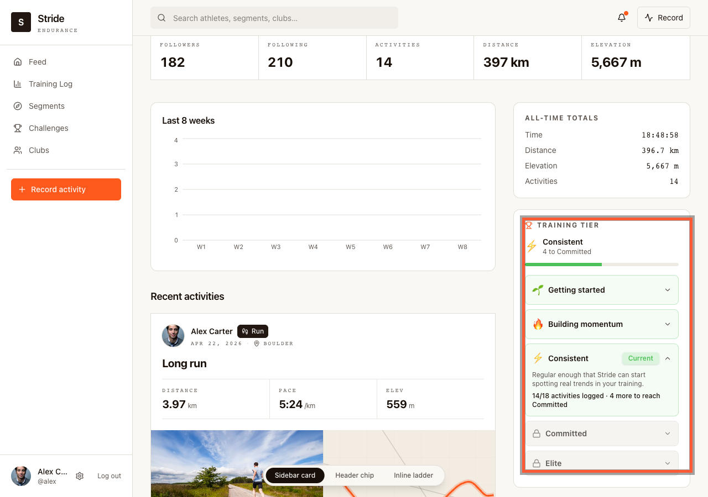
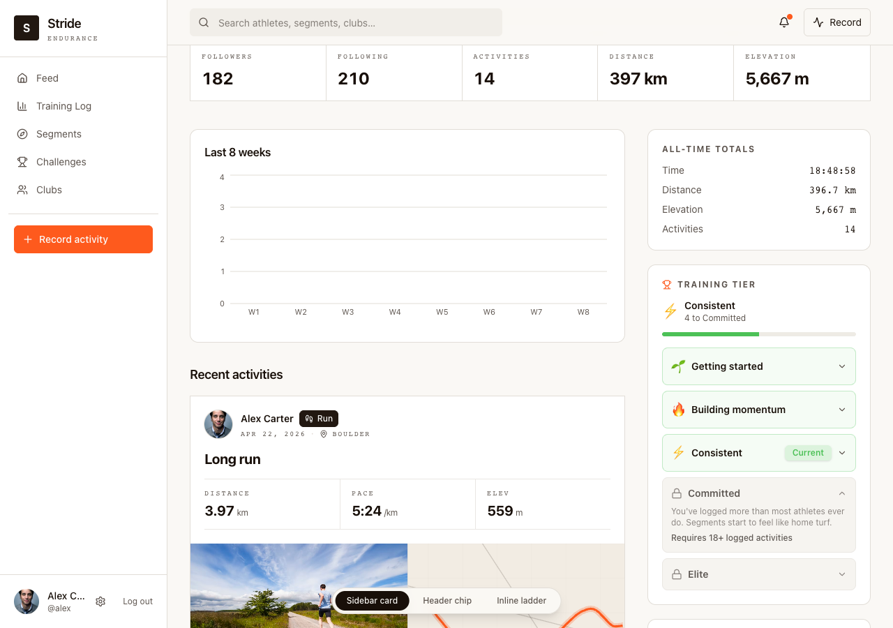
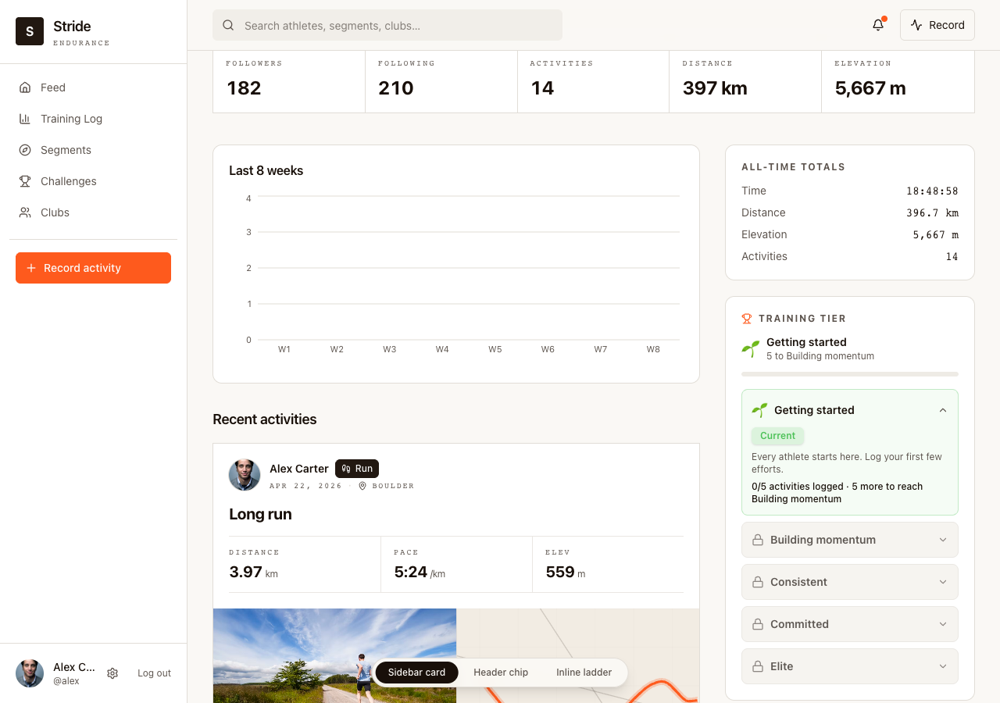

Week 2 — Prototype your feature
Prototype review · Stride training tiers
Prototyped for the retained-but-under-logging segment from Week 1 — a speculative bet, not a confirmed problem, and the review is built to say so plainly.
Spec, traced back to Week 1
When an athlete crosses a cumulative activity threshold, the product surfaces a permanent tier and visible progress toward the next one, so retained-but-under-logging athletes (casual_runner + weekend_warrior, 129 users, ~half the base) have a concrete reason to log the next activity. Unlike Week 1's sync-recovery spec, this is a bet on behavioral and instrumentation signals — not a confirmed customer or backlog problem.
Today, an activity's Trophy Case shows the same 6 decorative emoji regardless of what you've actually done. This replaces it with a live tier and a concrete next step.
Demo clip — expanding a locked tier, then flipping through the header-chip and inline-ladder placements live in the running prototype.

1. Default view — current tier (Consistent), progress toward the next one, ladder collapsed.

2. Click a locked tier — it expands to show exactly what's required to unlock it. Nothing is hidden behind a paywall or guesswork.

3. A brand-new athlete — 0 activities, "Getting started," 0/5 to the next tier. This is the sharpest contrast with today's product: a trophy case that means nothing yet, replaced by an actual next step.
Read before reviewing
tier_viewed / tier_unlocked tracking was added — a real gap, given this idea started from a different dead metric (challenge_joined).Open question
Three placements were prototyped for the same idea — a sidebar card, a header chip, and an inline ladder. Which should actually get built? I'd lean toward the sidebar card as the safest default, but that's a guess: unlike the sync fix, there's no support-ticket evidence pointing at one placement over another.
All three variants are in the running prototype, switchable live — not shown separately here to keep this review focused on one flow.